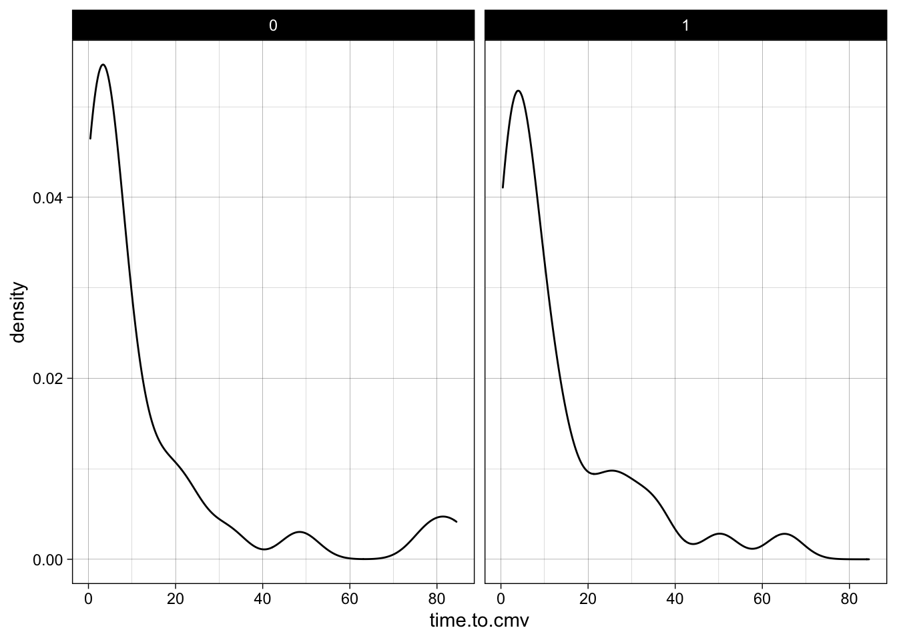

Chapter 12 Comparing Two Measures of Centrality
A common question in medical research is whether one group had a better outcome than another group. These outcomes can be measured with dichotomous outcomes like death or hospitalization,
but continuous outcomes like systolic blood pressure, endoscopic score, or ejection fraction are more commonly available, and provide more statistical power, and usually require a smaller sample size.
There is a tendency in clinical research to focus on dichotomous outcomes, even to the point of converting continuous measures to dichotomous ones (aka “dichotomania”, see Frank Harrell comments here), for fear of detecting and acting upon a small change in a continuous outcome that is not clinically meaningful.
While this can be a concern, especially in very large, over-powered studies, it can be addressed by aiming for a continuous difference that is at least as large as one that many clinicians agree (a priori) is clinically important (the MCID, or Minimum Clinically Important Difference).
The most common comparison of two groups with a continuous outcome is to look at the means or medians, and determine whether the available evidence suggests that these are equal (the null hypothesis). This can be done for means with Student’s t-test.
Let’s start by looking at the cytomegalovirus data set. This includes data on 64 patients who received bone marrow stem cell transplant, and looks at their time to activation of CMV (cytomegalovirus). In the code chunk below, we group the data by donor cmv status (donor.cmv), and look at the mean time to CMV activation (time.to.cmv variable). Run the code (using the green arrow at the top right of the code chunk below) to see the difference in time to CMV activation in months between groups.
Try out some other grouping variables in the group_by statement, in place of donor.cmv.
Consider variables like race, sex, and recipient.cmv. Edit the code and run it again with the green arrow at the top right.
# insert libraries in each chunk as if independent
library(tidyverse)
library(medicaldata)
cytomegalovirus %>%
group_by(sex) %>%
summarize(mean_time2cmv = mean(time.to.cmv)) ->
summ
summ## # A tibble: 2 x 2
## sex mean_time2cmv
## <dbl> <dbl>
## 1 0 13.7
## 2 1 12.7That seems like a big difference for donor.cmv, between 13.7303333 months and 12.7441176 months. And it makes theoretical sense that having a CMV positive donor is more likely to be associated with early activation of CMV in the recipient. But is it a significant difference, one that would be very unlikely to happen by chance? That depends on things like the number of people in each group, and the standard deviation in each group. That is the kind of question you can answer with a t-test, or for particularly skewed data like hospital length of stay or medical charges, a Wilcoxon test.
12.1 Common Problem
- Comparing two groups
- Mean or median vs. expected
- Two arms of study - independent
- Pre and post / spouse and partner / left vs right arm – paired groups
- Are the means significantly different?
- Or the medians (if not normally distributed)?
12.1.1 How Skewed is Too Skewed?
- Formal test of normality = Shapiro-Wilk test
- Use base data set called ToothGrowth
library(tidyverse)
library(medicaldata)
data <- cytomegalovirus
head(data)## ID age sex race diagnosis
## 1 1 61 1 0 acute myeloid leukemia
## 2 2 62 1 1 non-Hodgkin lymphoma
## 3 3 63 0 1 non-Hodgkin lymphoma
## 4 4 33 0 1 Hodgkin lymphoma
## 5 5 54 0 1 acute lymphoblastic leukemia
## 6 6 55 1 1 myelofibrosis
## diagnosis.type time.to.transplant prior.radiation
## 1 1 5.16 0
## 2 0 79.05 1
## 3 0 35.58 0
## 4 0 33.02 1
## 5 0 11.40 0
## 6 1 2.43 0
## prior.chemo prior.transplant recipient.cmv donor.cmv
## 1 2 0 1 0
## 2 3 0 0 0
## 3 4 0 1 1
## 4 4 0 1 0
## 5 5 0 1 1
## 6 0 0 1 1
## donor.sex TNC.dose CD34.dose CD3.dose CD8.dose TBI.dose
## 1 0 18.31 2.29 3.21 0.95 200
## 2 1 4.26 2.04 NA NA 200
## 3 0 8.09 6.97 2.19 0.59 200
## 4 1 21.02 6.09 4.87 2.32 200
## 5 0 14.70 2.36 6.55 2.40 400
## 6 1 4.29 6.91 2.53 0.86 200
## C1/C2 aKIRs cmv time.to.cmv agvhd time.to.agvhd cgvhd
## 1 0 1 1 3.91 1 3.55 0
## 2 1 5 0 65.12 0 65.12 0
## 3 0 3 0 3.75 0 3.75 0
## 4 0 2 0 48.49 1 28.55 1
## 5 0 6 0 4.37 1 2.79 0
## 6 0 2 1 4.53 1 3.88 0
## time.to.cgvhd
## 1 6.28
## 2 65.12
## 3 3.75
## 4 10.45
## 5 4.37
## 6 6.8712.1.2 Visualize the Distribution of data variables in ggplot
- Use geom_histogram or geom_density (pick one or the other)
- look at the distribution of CD3.dose or time.to.cmv
- Bonus points: facet by sex or race or donor.cmv
- Your turn to try it
library(tidyverse)
library(medicaldata)
data %>%
ggplot(mapping = aes(time.to.cmv)) +
geom_density() +
facet_wrap(~sex) +
theme_linedraw()
library(tidyverse)
library(medicaldata)
data %>%
ggplot(mapping = aes(time.to.cmv)) +
geom_histogram() +
facet_wrap(~race)
12.1.3 Visualize the Distribution of data$len in ggplot
- The OJ group is left skewed
- May be problematic for using means
- formally test with Shapiro-Wilk
library(tidyverse)
library(medicaldata)
data$time.to.cmv %>%
shapiro.test()##
## Shapiro-Wilk normality test
##
## data: .
## W = 0.68261, p-value = 0.000000000176212.1.4 Results of Shapiro-Wilk
- p-value = 0.1091
- p not < 0.05
- Acceptably close to normal
- OK to compare means rather than medians
- can use t test rather than wilcoxon test
- if p is < 0.05, use wilcoxon test
- also known as Mann-Whitney test
- a rank-based (non-parametric) test
12.1.5 Try it yourself
- use df <- msleep
library(tidyverse)
library(medicaldata)
df <- msleep
head(df$sleep_total)## [1] 12.1 17.0 14.4 14.9 4.0 14.4- test the normality of total sleep hours in mammals
12.1.6 Mammal sleep hours
library(tidyverse)
library(medicaldata)
shapiro.test(df$sleep_total)##
## Shapiro-Wilk normality test
##
## data: df$sleep_total
## W = 0.97973, p-value = 0.2143- meets criteria - acceptable to consider normally distributed
- now consider - is the mean roughly 8 hours of sleep per day?
12.2 One Sample T test
- univariate test
- Ho: mean is 8 hours
- Ha: mean is not 8 hours
- can use t test because shapiro.test is NS
12.2.1 How to do One Sample T test
library(tidyverse)
library(medicaldata)
t.test(df$sleep_total, alternative = "two.sided",
mu = 8)- Try it out, see if you can interpret results
12.2.2 Interpreting the One Sample T test
##
## One Sample t-test
##
## data: df$sleep_total
## t = 4.9822, df = 82, p-value = 0.000003437
## alternative hypothesis: true mean is not equal to 8
## 95 percent confidence interval:
## 9.461972 11.405497
## sample estimates:
## mean of x
## 10.43373- p is highly significant
- can reject the null, accept alternative
- sample mean 10.43, CI 9.46-11.41
12.2.3 What are the arguments of the t.test function?
- x = vector of continuous numerical data
- y= NULL - optional 2nd vector of continuous numerical data
- alternative = c(“two.sided”, “less”, “greater”),
- mu = 0
- paired = FALSE
- var.equal = FALSE
- conf.level = 0.95
- documentation
12.3 Insert flipbook for ttest here
Below is a flipbook.
It illustrates a bit of how to do a t-test.
click on it and you can use the arrow keys to proceed forward and back through the slides, as you add lines of code and more results occur.
Let’s start with a flipbook slide show. When the title slide appears, you can step through each line of the code to see what it does. The right/left and/or up/down arrows will let you move forward and backward in the code.
You can use the arrow keys to go through it one step at a time (forward or backward, depending on which arrow key you use), to see what each line of code actually does.
Give it a try below. See if you can figure out what each line of code is doing.
12.3.1 Flipbook Time!
This is t-testing in action.
12.4 Fine, but what about 2 groups?
- consider df$vore
library(tidyverse)
library(medicaldata)
prostate <- medicaldata::blood_storage
tabyl(prostate$AA)## prostate$AA n percent
## 0 261 0.8259494
## 1 55 0.1740506- hypothesis - herbivores need more time to get food, sleep less than carnivores
- how to test this?
- normal, so can use t test for 2 groups
12.4.1 Setting up 2 group t test
- formula interface: outcome ~ groupvar
library(tidyverse)
library(medicaldata)
df %>%
filter(vore %in% c("herbi", "carni")) %>%
t.test(formula = sleep_total ~ vore, data = .)- Try it yourself
- What do the results mean?
12.4.2 Results of the 2 group t test
##
## Welch Two Sample t-test
##
## data: sleep_total by vore
## t = 0.63232, df = 39.31, p-value = 0.5308
## alternative hypothesis: true difference in means is not equal to 0
## 95 percent confidence interval:
## -1.911365 3.650509
## sample estimates:
## mean in group carni mean in group herbi
## 10.378947 9.50937512.4.3 Interpreting the 2 group t test
- Welch t-test (not Student)
- Welch does NOT assume equal variances in each group
- p value NS
- accept null hypothesis
- Ho: means of groups roughly equal
- Ha: means are different
- 95% CI crosses 0
- Carnivores sleep a little more, but not a lot
12.4.4 2 group t test with wide data
- You want to compare column A with column B (data are not tidy)
- Do mammals spend more time awake than asleep?
library(tidyverse)
library(medicaldata)
t.test(x = df$sleep_total, y = df$awake, data = msleep)12.4.5 Results of 2 group t test with wide data
library(tidyverse)
library(medicaldata)
t.test(x = df$sleep_total, y = df$awake, data = msleep)##
## Welch Two Sample t-test
##
## data: df$sleep_total and df$awake
## t = -4.5353, df = 164, p-value = 0.00001106
## alternative hypothesis: true difference in means is not equal to 0
## 95 percent confidence interval:
## -4.498066 -1.769404
## sample estimates:
## mean of x mean of y
## 10.43373 13.5674712.5 3 Assumptions of Student’s t test
- Sample is normally distributed (test with Shapiro)
- Variances are homogeneous (homoskedasticity) (test with Levene)
- Observations are independent
- not paired like left vs. right colon
- not paired like spouse and partner
- not paired like measurements pre and post Rx
12.5.1 Testing Assumptions of Student’s t test
- Normality - test with Shapiro
- If not normal, Wilcoxon > t test
- Equal Variances - test with Levene
- If not equal, Welch t > Student’s t
- Observations are independent
- Think about data collection
- are some observations correlated with some others?
- If correlated, use paired t test
12.6 Getting results out of t.test
- Use the tidy function from the broom package
- Do carnivores have bigger brains than insectivores?
library(tidyverse)
library(medicaldata)
library(broom)
df %>%
filter(vore %in% c("carni", "insecti")) %>%
t.test(formula = brainwt ~ vore, data = .) %>%
tidy() ->
result
result12.6.1 Getting results out of t.test
## # A tibble: 1 x 10
## estimate estimate1 estimate2 statistic p.value parameter
## <dbl> <dbl> <dbl> <dbl> <dbl> <dbl>
## 1 0.0577 0.0793 0.0216 1.20 0.253 12
## # … with 4 more variables: conf.low <dbl>, conf.high <dbl>,
## # method <chr>, alternative <chr>12.7 Reporting the results from t.test using inline code
- use backticks before and after, start with r
- i.e. My result is [backtick]r code here[backtick].
- The mean brain weight for carnivores was 0.0792556
- The mean brain weight for herbivores was 0.02155
- The difference was 0.0577056
- The t statistic for this Two Sample t-test was 1.1995501
- The p value was 0.2534631
- The confidence interval was from -0.05 to 0.16
12.7.1 For Next Time
- Skewness and Kurtosis
- Review Normality
- When to use Wilcoxon
- Levene test for equal variances
- When to use Welch t vs. Student’s t
- Paired t and Wilcoxon tests